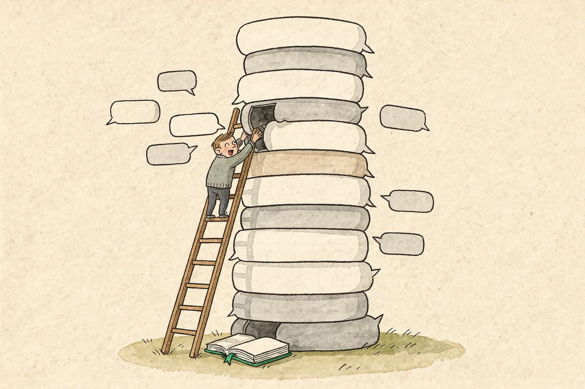
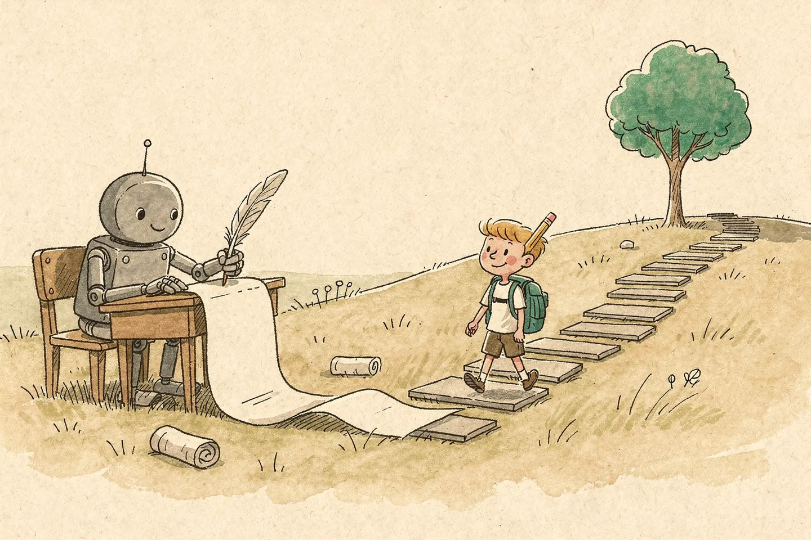

Blog · · Opinion
Brilliant courses, terrible classrooms
Language models can now write a course in a minute that many paid courses would be proud of. Then they hand it to you in about the worst place to learn it: a chat. The hard part of teaching yourself is no longer the material. It is the classroom.
Something changed quietly. Ask a model for two weeks of sight-reading, a plan for asking for a raise or a first tour of the night sky, and a minute later you have a sensible order, clear explanations, questions to answer and things to try. For most of history the bottleneck of teaching yourself was the material: the right book, a patient teacher, the money for either. For a great many subjects, that bottleneck is gone.
And yet most of these courses are never finished. Not because they are bad, but because of where they live.
The chat is a terrible classroom
A chat is built for conversation: you ask, it answers, the thread scrolls on. Learning that lasts needs nearly the opposite. It needs the material to come back after you have started to forget it, a question before the answer, and practice with feedback on the work. We wrote about why those things work, and why they feel worse than they are, in You are not a goldfish. A chat gets in the way of each of them.
- It waits for you. Assistants can now remember things and even schedule a reminder. But on day two the course still does not know which questions you missed on day one. Day two starts with scrolling.
- It answers before you have tried. A model built to help tends to explain first and ask after, and when it quizzes you it marks the work of the lesson it just wrote. It is a generous examiner of its own teaching.
- It never holds still. Regenerate and you get a different course. Come back in a week and it improvises from wherever the thread drifted. There is no edition to return to, correct once or pass on.
- Your work sinks into the scroll. Many courses are about something you make: a text, a sketch, a budget. In a chat your first attempt and your fifth never stand side by side, so you cannot see what changed.
The interactive pages that models now build beside the chat look much better. Some even keep a little state. But they are still pages to visit, not a practice that comes to find you tomorrow.
So we have tutors that write better than ever, and we take their courses in a medium designed for small talk. No wonder they don’t stick.

Let the model write, and something else run the course
A course is really two things, and a chat blurs them. One is a text: what to explain, what to ask, what to try, in what order. The other is a practice: the same course tomorrow as today, a memory of what you got wrong, a judge who is not the author, a calendar and a place to keep your work.
A model is very good at the first and has no business doing the second. That is the idea behind Minute Studio: use the power of a language model to create the course, then take it somewhere built for doing it, a few minutes a day.

A language both of you can read
The bridge between the two is a small course language. Minute Studio courses are written in plain text, a block per card, and the language was kept deliberately small, so that a model writes it correctly after one reading and a person can correct it without a manual. Here is one question and one exercise:
@quiz
guess: yes
return: yes
prompt: You draw one line slowly, eyes on the pencil tip, and one briskly, eyes on the far dot. Which comes out straighter?
explain: The brisk one. A slow hand corrects at every point, and each correction leaves a kink.
- The slow one: more time to correct it
- * The brisk one: your eyes hold the direction
- Both the same
@step 120
title: Twenty lines
Draw twenty lines between two dots, eyes on the far dot.The text is the model’s part. The two short fields are the part a chat cannot keep. guess: yes means you answer before you are told. return: yes means this question will find you again on a later day. Beside the quiz there are more than twenty other kinds of block: gaps to fill in, numbers within a margin, things to put in order or sort, a spot to find on a picture, a number of your own logged each session and drawn as your line, a photo of your work, a text revised in versions, intervals to hear and notes to play.
You get there by copying the studio’s brief into any chat, describing the course you want and pasting the result back, or in one step with your own model and key. The studio reads the script on every save and says what is off: a quiz with no right answer marked, a question that will come back in three weeks but still says “above”. You fix a sentence; you don’t regenerate a course.
Why a language, and not just an “import from chat” button? Because a script is an edition. It is the same course tomorrow, for you and for anyone you give it to. A person can read every line of what the model wrote and change any of it. And it says, in plain words, what should happen over the days, not just on the page.
What the script turns into
Once the course is in Minute Studio, the text becomes a practice:
- Questions come back. A question marked to return comes back on later days, the gap fitted to how you answered, mixed in with the questions from your other courses. Get one wrong and it is asked again the next day, until you get it right.
- Someone else marks it. With an account, answers are judged on the server, against the course as written, not by the model that wrote the lesson.
- Your work is kept. In a course that makes something, every version goes into your folder, and the first stands beside the newest.
- It fits a day. Sessions of a few minutes, a reminder at the time you choose, and a missed day loses nothing: what is due waits.
What you won’t find is a chatbot inside the session, improvising new material while you learn. The model’s work is done before you start, read by a person and saved. The one exception is small and optional: where a course allows it, your own model can add a sentence about what you wrote. It comments; it does not mark.
A side note: by hand, and for others
None of this needs a model. The language is small enough to write by hand, and the studio’s board lets you write a course card by card without seeing a line of it. Many of the best courses will come from someone who knows a subject well and simply writes it down.
A course that works can also travel. Publish it for yourself; invite a few friends to take it with you, each with their own progress (up to three per course on the Studio plan); or submit it for review, and once a person has read it through it joins the catalogue, where anyone can try the first session without an account. While Minute Studio is in testing, we open the catalogue to authors one at a time. The course is what gets shared, not you: there are no followers, no leaderboards and no comments under a course.
Content is cheap now. Practice isn’t.
We think the next years of teaching yourself won’t be decided by who generates the best material. That is becoming abundant, and the models will keep getting better at it. They will be decided by where people practise it: whether the course comes back tomorrow, asks before it tells, and keeps what you made. That is the part we are trying to build.
The free introduction course shows the whole idea in a few minutes a day. Its first session runs in your browser without an account, and its sixth shows you how to have AI draft a course of your own and how to check the draft against five points. Minute Studio is in its first test. If a model has ever written you a course, we would like to hear what happened to it.
Illustrations made with an image model (FLUX) for this post.